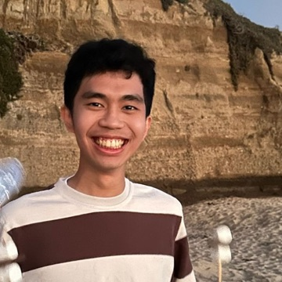

Open to Forward Deployed Engineer and Applied AI roles.
Client work is under NDA, so I can’t share demos or code. I’m happy to walk through any architecture on a call.
45% lower cost per order · 15% better on-time rate · 1,000+ shipments/day
Agentic routing across LTL, drayage and intermodal freight, built with the CEO and CTO. It handles carrier selection, load consolidation and exceptions with tool-calling loops, a shipment state machine and a deterministic rule engine for hard constraints (weight limits, lanes, compliance), tested with evals.
20 orders/day in my trial, saving 2 FTE hours/day · now running at 500+ orders/day
An LLM pipeline (RAG with LlamaIndex) that turns incoming order documents into structured orders in a legacy system. I built and ran the trial. Since I left, the team has scaled it to over 500 orders/day (EDIs/Emails).
40% less manual ops · +15% conversion · 5× outreach volume · 2× clients closed per quarter
One agent that merged five CRM processes into a single tool.
3,000+ pieces of content a month · about 2M views per client per month
A multimodal agent that produces short-form image, video and voice content using the latest models on fal.ai, scoring its own output against analytics.
I run Tolen-Tech, which builds AI systems for enterprise clients in Southeast Asia and Hong Kong. Before that, I co-founded CakAI (AI UGC for SEA brands) and founded Staditek (a coding education non-profit, since 2022). I now advise both.